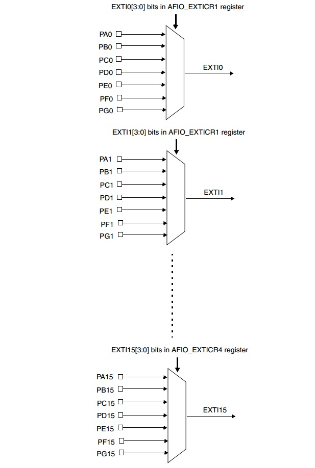
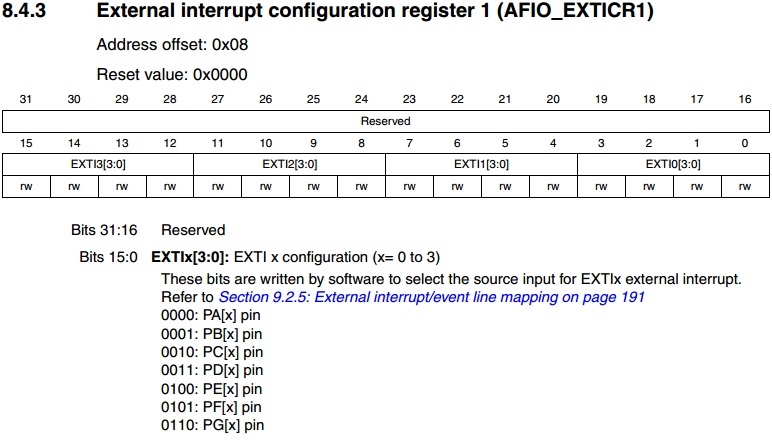
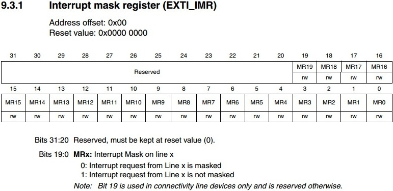
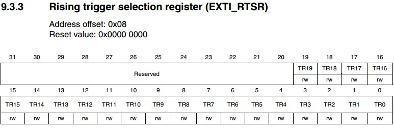
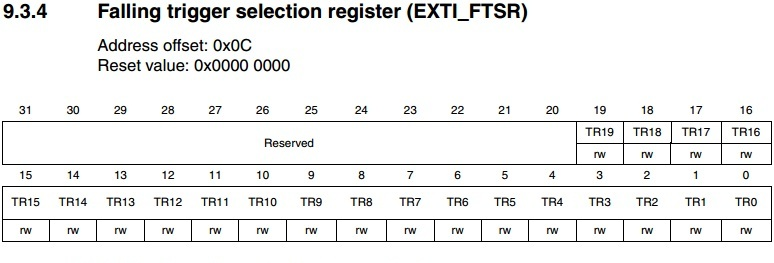
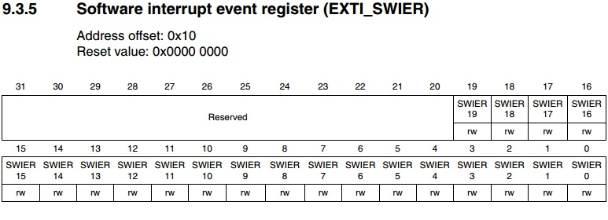
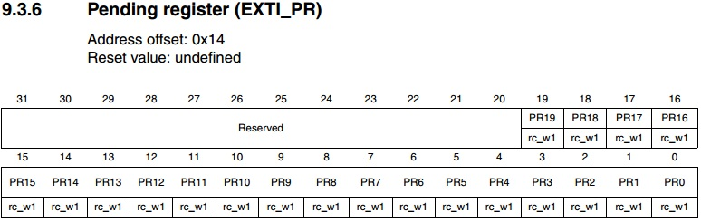

Внешние прерывания активизируются по изменению логического уровня на ноге контроллера. Удобно для обработки срочных событий от внешней периферии, иногда на них делают обработку кнопок. Т.к. они могут будить контроллер из глубокой спячки.
У STM32 за внешние прерывания отвечает EXTI контроллер. Его основные возможности:
До 20 линий прерываний (в реальности несколько меньше, зависит от контроллера)
Независимая работа со всеми линиями. Каждой линии присвоен собственный статусный бит в спец регистре
Улавливает импульсы длительность которых ниже меньше периода частоты APB2
EXTI Может генерировать:
Сама структура связи EXTI следующая:

Т.е. у нас есть 16 EXTI линий к которым мы можем подключать выводы порта. Причем группируются они по номерам пинов. Т.е. мы не можем на разные прерывания навесить, например, PA0 и PB0 либо одно, либо другое. Придется выбирать. Мультиплексоры управляются из группы регистров AFIO_EXTICR*.
Кстати, интересный факт. Даташит утверждает следующее:
8.4 Note: To read/write the AFIO_EVCR, AFIO_MAPR and AFIO_EXTICRx registers, the AFIO clock should first be enabled. Refer to Section 6.3.7: APB2 peripheral clock enable register (RCC_APB2ENR).
Т.е. для записи в регистры AFIO_EXTICRx должно быть включено тактирование AFIO. Проверил без него — все работает, значения записываются, прерывания работают. Может я где то ошибся? Прогнал под JTAG в Keil — нет, AFIO CLOCK Disabled, а все работает. Странно.
Но после выяснилось, что без включения AFIO мультиплексоры не работают. Т.е. сигнал будет передаваться ТОЛЬКО от порта А, т.к. это дефолтное значение мультиплексоров. Причем вне зависимости от того, что вы там себе настроили в программе. Прикиньте какие грабли! Забыл включить AFIO и привет! Ладно бы прерывания тупо не работали, а они будут работать, но совсем не от того вывода который вы выставили. А если там что-то дрыгается, то прерывание у вас срабатывать будет, но совсем не тогда, когда вы ждете. Попробуйте выловить такую фигню!
Так что AFIO надо включать до выбора канала мультиплексора! У меня же все работало потому, что выбранные линии порта совпали с портом А, стоящим по умолчанию. ВСЕГДА затактирывайте AFIO если используете альтернативные функции портов, избежите кучи глюков.
Есть еще четыре EXTI линии которые подключены не к GPIO, а к разной периферии.
● EXTI 16 — PVD выход
● EXTI 17 — событие от RTC Alarm
● EXTI 18 — событие от USB Wakeup
● EXTI 19 — событие от Ethernet Wakeup (там где есть эзернет на борту)
Конфигурация и регистры

AFIO_EXTICR* — выбор вывода.
Сначало надо выбрать в AFIO какой канал у нас к чему подключен. За это отвечает группа регистров AFIO_EXTICR* их там 4 штуки. Вот структура первого:
Т.е. у нас тут типичный мультиплексор. В первом регистре первые 4 канала EXTI, во втором регистре (AFIO_EXTICR2) следующая четверка и так до 16го. Мы просто выбираем на какой канал какой порт будет подцеплен. Т.е. чтобы, например, повесить прерывание на PD2 надо в EXTI2 (биты с 8 по 11) записать 0011. Ногу выбрали, дальше приступаем к настройке непосредственно прерываний.

EXTI_IMR — Регистр масок прерываний. Единичка в этом регистре в соответствующем бите разрешает прерывание на соответствующий канал EXTI. После сброса там нули. Т.е. все прерывания внешние локально запрещены.
EXTI_EMR — Регистр масок событий. Единичка тут разрешает событие на канал. События отличается от прерывания тем, что контроллер только сигнализирует о нем, но никуда, ни по какому вектору, не бежит выполнять код. Еще события умеют чуять некоторые периферийные устройства.


EXTI_RTSR и EXTI_FTSR — Регистры определяющие когда срабатывать. По какому фронту? Единичка в EXTI_RTSR даст событие по восходящему фронту, а единичка в EXTI_FTSR по спадающему. Можно поставить оба бита и ловить прерывание на подъеме и спаде.

EXTI_SWIER — Регистр софтверного запуска прерывания.
Т.е. если нам надо вручную, принудительно, его запустить, то надо сюда записать в конкретный бит. Записываем в EXTI_SWIER 1 и у нас вскакивает бит в EXTI_PR, а контроллер генерирует событие и, если разрешено, уходит на прерывание.

EXTI_PR — Ну и бит собственно флажка события, по которому происходит вызов прерывания. Обратите внимание на обозначение обращения с ним — rc_w1. Это следует читать как read/clear = write 1. Т.е. мы этот бит можем читать, а чтобы его сбросить надо в него записать единичку. Как на AVR прям :) При переходе в прерывание его надо сбрасывать вручную! Иначе на выходе с прерывания будет «и снова здравствуйте!».
Теперь покажу пример кода работы с прерыванием. Отдельный пример создавать мне лень, возьму кусок кода из прошлого примера про NVIC там как раз были внешние прерывания:
|
1 2 3 4 5 6 7 8 9 10 11 12 13 14 15 16 17 18 19 20 21 22 23 24 25 26 27 28 29 30 31 32 33 34 35 36 37 38 39 40 41 42 43 44 45 46 47 48 49 50 51 52 53 54 55 56 57 58 59 60 61 62 63 64 65 66 67 68 69 70 71 72 73 74 75 76 77 78 79 80 81 82 83 84 85 86 87 88 89 90 91 92 93 94 95 96 97 98 99 100 101 102 103 104 105 106 107 108 109 110 111 112 113 114 115 116 117 118 119 120 121 122 123 124 125 126 127 128 129 130 131 132 133 134 135 136 137 138 139 140 141 142 143 144 145 |
#include "stm32f10x.h" #define F_CPU 72000000UL
void Delay( uint16_t Val);
// Обработчик EXTI 1 void EXTI1_IRQHandler(void) {
// Делаем что-то в прерывании uint32_t i; for(i=0;i!`;i++) { GPIOB->BSRR = GPIO_BSRR_BS0; // Сбросили бит. Delay(55560); GPIOB->BSRR = GPIO_BSRR_BR0; // Установили бит. Delay(55560); }
// Сбрасываем флаг прерывания // Обратите внимание как сбрасывается флаг прерывания! Единичкой! // Т.е. тут даже OR не надо, можно просто в это место загнать 1. Нуль роли не играет. // Очень удобно :) EXTI->PR |= EXTI_PR_PR1; }
// Обработчик EXTI 2 void EXTI2_IRQHandler(void) {
// Делаем что-то в прерывании uint32_t i;
for(i=0;i!`;i++) { GPIOB->BSRR = GPIO_BSRR_BS1; // Сбросили бит. Delay(55560); GPIOB->BSRR = GPIO_BSRR_BR1; // Установили бит. Delay(55560); }
// Сбрасываем флаг прерывания EXTI->PR |= EXTI_PR_PR2; }
int main(void) { // Запускаем конфигуратор тактовой частоты из CMSIS SystemInit();
// Тут стандартная настройка портов. Нам же кнопочки почуять, диодиками поморгать. // Подаем тактирование на порт А, В. Надо AFIO затактировать. Иначе будет трудно уловимый глюк! // Прерывания работать будут, но все будут вести на Порт А вне зависимости от настроек мультиплексоров. RCC->APB2ENR |= RCC_APB2ENR_IOPAEN | RCC_APB2ENR_IOPBEN | RCC_APB2ENR_AFIOEN;
// Настройка выходных портов. Те, что на светодиоды. // Конфигурируем CRL регистры. // Сбрасываем биты CNF для битов 3,4,5. Режим 00 - Push-Pull GPIOB->CRL &= ~(GPIO_CRL_CNF5 | GPIO_CRL_CNF1 | GPIO_CRL_CNF0);
// Выставляем режим для 0,1,5 пина. Режим MODE 01 = Max Speed 10MHz Ставим нулевой бит MODE GPIOB->CRL &= ~(GPIO_CRL_MODE5 | GPIO_CRL_MODE1 | GPIO_CRL_MODE0); // Занулим заранее GPIOB->CRL |= GPIO_CRL_MODE5_0 | GPIO_CRL_MODE1_0 | GPIO_CRL_MODE0_0; // Выставим бит 0
// Настройка входных портов. Те что на кнопки. // Конфигурируем CRL регистры. // Выставляем режим порта в CNF для битов 1,2 Режим 10 = PullUp(Down) Ставим первый бит CRL GPIOA->CRL &= ~(GPIO_CRL_CNF1 | GPIO_CRL_CNF2); // Занулим заранее GPIOA->CRL |= GPIO_CRL_CNF1_1 | GPIO_CRL_CNF2_1; // Выставим бит 1
// Выставляем режим для 1,2 пина. Режим MODE_00 = Input GPIOA->CRL &= ~(GPIO_CRL_MODE1 | GPIO_CRL_MODE2);
// Установили бит 1,2 в ODR включив PULL UP. GPIOA->BSRR = GPIO_BSRR_BS2 | GPIO_BSRR_BS1;
// Вот тут самая мякотка. Настройка, собственно, прерываний :) // Настраиваем EXTI1 и EXTI2 на выводы порта А. Они в первом регистре оба. А регистры в виде массива описаны в CMSIS // Тут еще одна засада. Регистры EXTICR сгруппированы в массив, а массив считается с нуля. Т.е. первый EXTICR регистр в 0 ячейке // второй регистр в первой, третий во 2. Со сдвигом короче. Вот чего бы их, как принято у программистов, не обзывать с нуля? AFIO->EXTICR[0] |= AFIO_EXTICR1_EXTI1_PA | AFIO_EXTICR1_EXTI2_PA ;
// Прерывание по падению уровня на ноге 1 и 2 порта привязанного к EXTI EXTI->FTSR |=(EXTI_FTSR_TR1 | EXTI_FTSR_TR2);
// Функции CMSIS разрешающие прерывания в NVIC NVIC_EnableIRQ (EXTI1_IRQn); NVIC_EnableIRQ (EXTI2_IRQn);
//Расставляем приоритеты (опционально, можно закомментить и тогда приоритеты будут равны) NVIC_SetPriority (EXTI2_IRQn, 2);
// Разрешаем прерывания в периферии EXTI->IMR |=(EXTI_IMR_MR1 | EXTI_IMR_MR2);
// Разрешаем глобальные прерывания __enable_irq ();
//Фоновая программа while(1) { GPIOB->BSRR = GPIO_BSRR_BR5; // Сбросили бит. Delay(55560); GPIOB->BSRR = GPIO_BSRR_BS5; // Установили бит. Delay(55560); } }
/* Тупая задержка */ void Delay(uint16_t Val) { for( ; Val != 0; Val--) { look = Val; __nop(); } }
#ifdef USE_FULL_ASSERT /** * @brief Reports the name of the source file and the source line number * where the assert_param error has occurred. * @param file: pointer to the source file name * @param line: assert_param error line source number * @retval None */ void assert_failed(uint8_t* file, uint32_t line) { /* User can add his own implementation to report the file name and line number, ex: printf("Wrong parameters value: file %s on line %drn", file, line) */
/* Infinite loop */ while (1) { } } #endif |
Вот, собственно, и все. Ничего сложного.